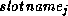

Common Lisp the Language, 2nd Edition

This
section describes the functions, macros, special forms, and
generic functions provided by the Common Lisp Object System Programmer Interface. The
Programmer Interface comprises the functions and macros that are
sufficient for writing most object-oriented programs.
This section is reference material that requires an understanding of the basic concepts of the Common Lisp Object System. The functions are arranged in alphabetical order for convenient reference.
The description of each function, macro, special form, and generic function includes its purpose, its syntax, the semantics of its arguments and returned values, and often an example and cross-references to related functions.
The syntax description for a function, macro, or special form describes its parameters. The description of a generic function includes descriptions of the methods that are defined on that generic function by the Common Lisp Object System. A method signature is used to describe the parameters and parameter specializers for each method.
The following is an example of the format for the syntax description of a generic function with the method signature for one primary method:
[Generic function]
f x y &optional z &key :k
[Primary method]
f (x class) (y t) &optional z &key :k
This description indicates that the generic function f has two required parameters, x and y. In addition, there is an optional parameter z and a keyword parameter :k.
The method signature indicates that this method on the generic function f has two required parameters, x, which must be an instance of the class class, and y, which can be any object. In addition, there is an optional parameter z and a keyword parameter :k. The signature also indicates that this method on f is a primary method and has no qualifiers.
The syntax description for a generic function describes the lambda-list of the generic function itself, while the method signatures describe the lambda-lists of the defined methods.
The generic functions described in this book are all standard generic functions. They all use standard method combination.
Any implementation of the Common Lisp Object System is allowed to provide additional methods on the generic functions described here.
It is useful to categorize the functions and macros according to their role in this standard:
These tools allow for defining new classes, methods, and generic functions and for making instances. Some tools used within method bodies are also listed here. Some of the macros listed here have a corresponding function that performs the same task at a lower level of abstraction.
[At this point the original CLOS report contained a description of the [[ and ]] notation; that description is omitted here. I have adopted the notation for use throughout this book. It is described in section 1.2.5.-GLS]
[Generic function]
add-method generic-function method
[Primary method]
add-method (generic-function standard-generic-function) (method method)
The generic function add-method adds a method to a generic function. It destructively modifies the generic function and returns the modified generic function as its result.
The generic-function argument is a generic function object.
The method argument is a method object. The lambda-list of the method function must be congruent with the lambda-list of the generic function, or an error is signaled.
The modified generic function is returned. The result of add-method is eq to the generic-function argument.
If the given method agrees with an existing method of the generic function on parameter specializers and qualifiers, the existing method is replaced. See section 28.1.6.3 for a definition of agreement in this context.
If the method object is a method object of another generic function, an error is signaled.
See section 28.1.6.3 as well as defmethod, defgeneric, find-method, and remove-method.
[Macro]
call-method method next-method-list
The macro call-method is used in method combination. This macro hides the implementation-dependent details of how methods are called. It can be used only within an effective method form, for the name call-method is defined only within the lexical scope of such a form.
The macro call-method invokes the specified method, supplying it with arguments and with definitions for call-next-method and for next-method-p. The arguments are the arguments that were supplied to the effective method form containing the invocation of call-method. The definitions of call-next-method and next-method-p rely on the list of method objects given as the second argument to call-method.
The call-next-method function available to the method that is the first subform will call the first method in the list that is the second subform. The call-next-method function available in that method, in turn, will call the second method in the list that is the second subform, and so on, until the list of next methods is exhausted.
The method argument is a method object; the next-method-list argument is a list of method objects.
A list whose first element is the symbol make-method and whose second element is a Lisp form can be used instead of a method object as the first subform of call-method or as an element of the second subform of call-method. Such a list specifies a method object whose method function has a body that is the given form.
The result of call-method is the value or values returned by the method invocation.
See call-next-method, define-method-combination, and next-method-p.
[Function]
call-next-method &rest args
The function call-next-method can be used within the body of a method defined by a method-defining form to call the next method.
The function call-next-method returns the value or values returned by the method it calls. If there is no next method, the generic function no-next-method is called.
The type of method combination used determines which methods can invoke call-next-method. The standard method combination type allows call-next-method to be used within primary methods and :around methods.
The standard method combination type defines the next method according to the following rules:
For further discussion of the use of call-next-method, see sections 28.1.7.2 and 28.1.7.4.
When call-next-method is called with no arguments, it passes the current method's original arguments to the next method. Neither argument defaulting, nor using setq, nor rebinding variables with the same names as parameters of the method affects the values call-next-method passes to the method it calls.
When call-next-method is called with arguments, the next method is called with those arguments. When providing arguments to call-next-method, the following rule must be satisfied or an error is signaled: The ordered set of methods applicable for a changed set of arguments for call-next-method must be the same as the ordered set of applicable methods for the original arguments to the generic function. Optimizations of the error checking are possible, but they must not change the semantics of call-next-method.
If call-next-method is called with arguments but omits optional arguments, the next method called defaults those arguments.
The function call-next-method returns the value or values returned by the method it calls.
Further computation is possible after call-next-method returns.
The definition of the function call-next-method has lexical scope (for it is defined only within the body of a method defined by a method-defining form) and indefinite extent.
For generic functions using a type of method combination defined by the short form of define-method-combination, call-next-method can be used in :around methods only.
The function next-method-p can be used to test whether or not there is a next method.
If call-next-method is used in methods that do not support it, an error is signaled.
See sections 28.1.7, 28.1.7.2, and 28.1.7.4 as well as the functions define-method-combination, next-method-p, and no-next-method.
[Generic function]
change-class instance new-class
change-class (instance standard-object)
(new-class standard-class)
change-class (instance t)
(new-class symbol)
The generic function change-class changes the class of an instance to a new class. It destructively modifies and returns the instance.
If in the old class there is any slot of the same name as a local slot in the new class, the value of that slot is retained. This means that if the slot has a value, the value returned by slot-value after change-class is invoked is eql to the value returned by slot-value before change-class is invoked. Similarly, if the slot was unbound, it remains unbound. The other slots are initialized as described in section 28.1.11.
The instance argument is a Lisp object.
The new-class argument is a class object or a symbol that names a class.
If the second of the preceding methods is selected, that method invokes change-class on instance and (find-class new-class).
The modified instance is returned. The result of change-class is eq to the instance argument.
Examples:
(defclass position () ())
(defclass x-y-position (position)
((x :initform 0 :initarg :x)
(y :initform 0 :initarg :y)))
(defclass rho-theta-position (position)
((rho :initform 0)
(theta :initform 0)))
(defmethod update-instance-for-different-class :before
((old x-y-position)
(new rho-theta-position)
&key)
;; Copy the position information from old to new to make new
;; be a rho-theta-position at the same position as old.
(let ((x (slot-value old 'x))
(y (slot-value old 'y)))
(setf (slot-value new 'rho) (sqrt (+ (* x x) (* y y)))
(slot-value new 'theta) (atan y x))))
;;; At this point an instance of the class x-y-position can be ;;; changed to be an instance of the class rho-theta-position ;;; using change-class: (setq p1 (make-instance 'x-y-position :x 2 :y 0)) (change-class p1 'rho-theta-position) ;;; The result is that the instance bound to p1 is now ;;; an instance of the class rho-theta-position. ;;; The update-instance-for-different-class method ;;; performed the initialization of the rho and theta ;;; slots based on the values of the x and y slots, ;;; which were maintained by the old instance.
After completing all other actions, change-class invokes the generic function update-instance-for-different-class. The generic function update-instance-for-different-class can be used to assign values to slots in the transformed instance.
The generic function change-class has several semantic difficulties. First, it performs a destructive operation that can be invoked within a method on an instance that was used to select that method. When multiple methods are involved because methods are being combined, the methods currently executing or about to be executed may no longer be applicable. Second, some implementations might use compiler optimizations of slot access, and when the class of an instance is changed the assumptions the compiler made might be violated. This implies that a programmer must not use change-class inside a method if any methods for that generic function access any slots, or the results are undefined.
See section 28.1.11 as well as update-instance-for-different-class.
[Generic function]
class-name class
[Primary method]
class-name (class class)
The generic function class-name takes a class object and returns its name. The class argument is a class object. The new-value argument is any object. The name of the given class is returned.
The name of an anonymous class is nil.
If S is a symbol such that S =(class-name C) and C = (find-class S), then S is the proper name of C (see section 28.1.2).
See also section 28.1.2 and find-class.
[Generic function]
(setf class-name) new-value class
[Primary method]
(setf class-name) new-value (class class)
The generic function (setf class-name) takes a class object and sets its name. The class argument is a class object. The new-value argument is any object.
[Function]
class-of object
The function class-of returns the class of which the given object is an instance. The argument to class-of may be any Common Lisp object. The function class-of returns the class of which the argument is an instance.
[Function]
compute-applicable-methods generic-function function-arguments
Given a generic function and a set of arguments, the function compute-applicable-methods returns the set of methods that are applicable for those arguments.
The methods are sorted according to precedence order. See section 28.1.7.
The generic-function argument must be a generic function object. The function-arguments argument is a list of the arguments to that generic function. The result is a list of the applicable methods in order of precedence. See section 28.1.7.
[Macro]
defclass class-name ({superclass-name}*)
({slot-specifier}*) [[?class-option]]
class-name ::= symbol
superclass-name ::= symbol
slot-specifier ::= slot-name | (slot-name [[?slot-option]])
slot-name ::= symbol
slot-option ::= {:reader reader-function-name}*
| {:writer writer-function-name}*
| {:accessor reader-function-name}*
| {:allocation allocation-type}*
| {:initarg initarg-name}*
| {:initform form}*
| {:type type-specifier}*
| {:documentation string}*
reader-function-name ::= symbol
writer-function-name ::= function-name/
function-name ::= {symbol | (setf symbol)}
initarg-name ::= symbol
allocation-type ::= :instance | :class
class-option ::= (:default-initargs initarg-list)
| (:documentation string)
| (:metaclass class-name)
initarg-list ::= {initarg-name default-initial-value-form}*
The macro defclass defines a new named class. It returns the new class object as its result.
The syntax of defclass provides options for specifying initialization arguments for slots, for specifying default initialization values for slots, and for requesting that methods on specified generic functions be automatically generated for reading and writing the values of slots. No reader or writer functions are defined by default; their generation must be explicitly requested.
Defining a new class also causes a type of the same name to be defined. The predicate (typep object class-name) returns true if the class of the given object is class-name itself or a subclass of the class class-name. A class object can be used as a type specifier. Thus (typep object class) returns true if the class of the object is class itself or a subclass of class.
The class-name argument is a non-nil symbol. It becomes the proper name of the new class. If a class with the same proper name already exists and that class is an instance of standard-class, and if the defclass form for the definition of the new class specifies a class of class standard-class, the definition of the existing class is replaced.
Each superclass-name argument is a non-nil symbol that specifies a direct superclass of the new class. The new class will inherit slots and methods from each of its direct superclasses, from their direct superclasses, and so on. See section 28.1.3 for a discussion of how slots and methods are inherited.
Each slot-specifier argument is the name of the slot or a list consisting of the slot name followed by zero or more slot options. The slot-name argument is a symbol that is syntactically valid for use as a variable name. If there are any duplicate slot names, an error is signaled.
The following slot options are available:
No implementation is permitted to extend the syntax of defclass to allow (slot-name form) as an abbreviation for (slot-name :initform form).
Each class option is an option that refers to the class as a whole or to all class slots. The following class options are available:
The new class object is returned as the result.
If a class with the same proper name already exists and that class is an instance of standard-class, and if the defclass form for the definition of the new class specifies a class of class standard-class, the existing class is redefined, and instances of it (and its subclasses) are updated to the new definition at the time that they are next accessed (see section 28.1.10).
Note the following rules of defclass for standard classes:
The Object System may be extended to cover situations where these rules are not obeyed.
Some slot options are inherited by a class from its superclasses, and some can be shadowed or altered by providing a local slot description. No class options except :default-initargs are inherited. For a detailed description of how slots and slot options are inherited, see section 28.1.3.2.
The options to defclass can be extended. An implementation must signal an error if it observes a class option or a slot option that is not implemented locally.
It is valid to specify more than one reader, writer, accessor, or initialization argument for a slot. No other slot option may appear more than once in a single slot description, or an error is signaled.
If no reader, writer, or accessor is specified for a slot, the slot can be accessed only by the function slot-value.
See sections 28.1.2, 28.1.3, 28.1.10, 28.1.5, 28.1.9 as well as slot-value, make-instance, and initialize-instance.
[Macro]
defgeneric function-name lambda-list
[[?option | {method-description}*]]
function-name ::= {symbol | (setf symbol)}
lambda-list ::= ({var}*
[&optional {var | (var)}*]
[&rest var]
[&key {keyword-parameter}* [&allow-other-keys]])
keyword-parameter ::= var | ({var | (keyword var)})
option ::= (:argument-precedence-order {parameter-name}+)
| (declare {declaration}+)
| (:documentation string)
| (:method-combination symbol {arg}*)
| (:generic-function-class class-name)
| (:method-class class-name)
method-description ::= (:method {method-qualifier}*
specialized-lambda-list
[[ {declaration}* | documentation ]]
{form}*)
method-qualifier ::= non-nil-atom
specialized-lambda-list ::=
({var | (var parameter-specializer-name)}*
[&optional {var | (var [initform [supplied-p-parameter]])}*]
[&rest var]
[&key {specialized-keyword-parameter}* [&allow-other-keys]]
[&aux {var | (var [initform])}*])
specialized-keyword-parameter ::=
var | ({var | (keyword var)} [initform [supplied-p-parameter]])
parameter-specializer-name ::= symbol | (eql eql-specializer-form)
The macro defgeneric is used to define a generic function or to
specify options and declarations that pertain to a generic function as
a whole.
If (fboundp function-name) is nil, a new generic function is created. If (fdefinition function-specifier) is a generic function, that generic function is modified. If function-name/ names a non-generic function, a macro, or a special form, an error is signaled.
[X3J13 voted in March 1989 (FUNCTION-NAME) to use fdefinition in the previous paragraph, as shown, rather than symbol-function, as it appeared in the original report on CLOS [5,7]. The vote also changed all occurrences of function-specifier in the original report to function-name; this change is reflected here.-GLS]
Each method-description defines a method on the generic function. The lambda-list of each method must be congruent with the lambda-list specified by the lambda-list option. If this condition does not hold, an error is signaled. See section 28.1.6.4 for a definition of congruence in this context.
The macro defgeneric returns the generic function object as its result.
The function-name argument is a non-nil symbol or a list of the form (setf symbol).
The lambda-list argument is an ordinary function lambda-list with the following exceptions:
The following options are provided. A given option may occur only once, or an error is signaled.
The special, ftype, function, inline, notinline, and declaration declarations are not permitted. Individual implementations can extend the declare option to support additional declarations. If an implementation notices a declaration that it does not support and that has not been proclaimed as a non-standard declaration name in a declaration proclamation, it should issue a warning.
The method-description arguments define methods that will be associated with the generic function. The method-qualifier and specialized-lambda-list arguments in a method description are the same as for defmethod.
The form arguments specify the method body. The body of the method is enclosed in an implicit block. If function-name is a symbol, this block bears the same name as the generic function. If function-name is a list of the form (setf symbol), the name of the block is symbol.
The generic function object is returned as the result.
The effect of the defgeneric macro is as if the following three steps were performed: first, methods defined by previous defgeneric forms are removed; second, ensure-generic-function is called; and finally, methods specified by the current defgeneric form are added to the generic function.
If no method descriptions are specified and a generic function of the same name does not already exist, a generic function with no methods is created.
The lambda-list argument of defgeneric specifies the shape of lambda-lists for the methods on this generic function. All methods on the resulting generic function must have lambda-lists that are congruent with this shape. If a defgeneric form is evaluated and some methods for that generic function have lambda-lists that are not congruent with that given in the defgeneric form, an error is signaled. For further details on method congruence, see section 28.1.6.4.
Implementations can extend defgeneric to include other options. It is required that an implementation signal an error if it observes an option that is not implemented locally.
See section 28.1.6.4 as well as defmethod, ensure-generic-function, and generic-function.
[Macro]
define-method-combination name [[?short-form-option]]
define-method-combination name lambda-list
({method-group-specifier}*)
[(:arguments . lambda-list)]
[(:generic-function generic-fn-symbol)]
[[{declaration}* | doc-string]]
{form}*
short-form-option ::= :documentation string
| :identity-with-one-argument boolean
| :operator operator
method-group-specifier ::= (variable {{qualifier-pattern}+ | predicate}
[[?long-form-option]])
long-form-option ::= :description format-string
| :order order
| :required boolean
The macro define-method-combination is used to define new types
of method combination.
There are two forms of define-method-combination. The short form is a simple facility for the cases that are expected to be most commonly needed. The long form is more powerful but more verbose. It resembles defmacro in that the body is an expression, usually using backquote, that computes a Lisp form. Thus arbitrary control structures can be implemented. The long form also allows arbitrary processing of method qualifiers.
In both the short and long forms, name is a symbol. By convention, non-keyword, non-nil symbols are usually used.
The short-form syntax of define-method-combination is recognized when the second subform is a non-nil symbol or is not present. When the short form is used, name is defined as a type of method combination that produces a Lisp form (operator method-call method-call ... ). The operator is a symbol that can be the name of a function, macro, or special form. The operator can be specified by a keyword option; it defaults to name.
Keyword options for the short form are the following:
None of the subforms is evaluated.
These types of method combination require exactly one qualifier per method. An error is signaled if there are applicable methods with no qualifiers or with qualifiers that are not supported by the method combination type.
A method combination procedure defined in this way recognizes two roles for methods. A method whose one qualifier is the symbol naming this type of method combination is defined to be a primary method. At least one primary method must be applicable or an error is signaled. A method with :around as its one qualifier is an auxiliary method that behaves the same as an :around method in standard method combination. The function call-next-method can be used only in :around methods; it cannot be used in primary methods defined by the short form of the define-method-combination macro.
A method combination procedure defined in this way accepts an optional argument named order, which defaults to :most-specific-first. A value of :most-specific-last reverses the order of the primary methods without affecting the order of the auxiliary methods.
The short form automatically includes error checking and support for :around methods.
For a discussion of built-in method combination types, see section 28.1.7.4.
The long-form syntax of define-method-combination is recognized when the second subform is a list.
The lambda-list argument is an ordinary lambda-list. It receives any arguments provided after the name of the method combination type in the :method-combination option to defgeneric.
A list of method group specifiers follows. Each specifier selects a subset of the applicable methods to play a particular role, either by matching their qualifiers against some patterns or by testing their qualifiers with a predicate. These method group specifiers define all method qualifiers that can be used with this type of method combination. If an applicable method does not fall into any method group, the system signals the error that the method is invalid for the kind of method combination in use.
Each method group specifier names a variable. During the execution of the forms in the body of define-method-combination, this variable is bound to a list of the methods in the method group. The methods in this list occur in most-specific-first order.
A qualifier pattern is a list or the symbol *. A method matches a qualifier pattern if the method's list of qualifiers is equal to the qualifier pattern (except that the symbol * in a qualifier pattern matches anything). Thus a qualifier pattern can be one of the following: the empty list (), which matches unqualified methods; the symbol *, which matches all methods; a true list, which matches methods with the same number of qualifiers as the length of the list when each qualifier matches the corresponding list element; or a dotted list that ends in the symbol * (the * matches any number of additional qualifiers).
Each applicable method is tested against the qualifier patterns and predicates in left-to-right order. As soon as a qualifier pattern matches or a predicate returns true, the method becomes a member of the corresponding method group and no further tests are made. Thus if a method could be a member of more than one method group, it joins only the first such group. If a method group has more than one qualifier pattern, a method need only satisfy one of the qualifier patterns to be a member of the group.
The name of a predicate function can appear instead of qualifier patterns in a method group specifier. The predicate is called for each method that has not been assigned to an earlier method group; it is called with one argument, the method's qualifier list. The predicate should return true if the method is to be a member of the method group. A predicate can be distinguished from a qualifier pattern because it is a symbol other than nil or *.
If there is an applicable method whose qualifiers are not valid for the method combination type, the function invalid-method-error is called.
Method group specifiers can have keyword options following the qualifier patterns or predicate. Keyword options can be distinguished from additional qualifier patterns because they are neither lists nor the symbol *. The keyword options are:
The use of method group specifiers provides a convenient syntax to select methods, to divide them among the possible roles, and to perform the necessary error checking. It is possible to perform further filtering of methods in the body forms by using normal list-processing operations and the functions method-qualifiers and invalid-method-error. It is permissible to use setq on the variables named in the method group specifiers and to bind additional variables. It is also possible to bypass the method group specifier mechanism and do everything in the body forms. This is accomplished by writing a single method group with * as its only qualifier pattern; the variable is then bound to a list of all of the applicable methods, in most-specific-first order.
The body forms compute and return the Lisp form that specifies how the methods are combined, that is, the effective method. The effective method uses the macro call-method. The definition of this macro has lexical scope and is available only in an effective method form. Given a method object in one of the lists produced by the method group specifiers and a list of next methods, the macro call-method will invoke the method so that call-next-method will have available the next methods.
When an effective method has no effect other than to call a single method, some implementations employ an optimization that uses the single method directly as the effective method, thus avoiding the need to create a new effective method. This optimization is active when the effective method form consists entirely of an invocation of the call-method macro whose first subform is a method object and whose second subform is nil. Each define-method-combination body is responsible for stripping off redundant invocations of progn, and, multiple-value-prog1, and the like, if this optimization is desired.
The list (:arguments . lambda-list) can appear before any declaration or documentation string. This form is useful when the method combination type performs some specific behavior as part of the combined method and that behavior needs access to the arguments to the generic function. Each parameter variable defined by lambda-list is bound to a form that can be inserted into the effective method. When this form is evaluated during execution of the effective method, its value is the corresponding argument to the generic function. If lambda-list is not congruent to the generic function's lambda-list, additional ignored parameters are automatically inserted until it is congruent. Thus it is permissible for lambda-list to receive fewer arguments than the number that the generic function expects.
Erroneous conditions detected by the body should be reported with method-combination-error or invalid-method-error; these functions add any necessary contextual information to the error message and will signal the appropriate error.
The body forms are evaluated inside the bindings created by the lambda-list and method group specifiers. Declarations at the head of the body are positioned directly inside bindings created by the lambda-list and outside the bindings of the method group variables. Thus method group variables cannot be declared.
Within the body forms, generic-function-symbol is bound to the generic function object.
If a doc-string argument is present, it provides the documentation for the method combination type.
The functions method-combination-error and invalid-method-error can be called from the body forms or from functions called by the body forms. The actions of these two functions can depend on implementation-dependent dynamic variables automatically bound before the generic function compute-effective-method is called.
Note that two methods with identical specializers, but with different qualifiers, are not ordered by the algorithm described in step 2 of the method selection and combination process described in section 28.1.7. Normally the two methods play different roles in the effective method because they have different qualifiers, and no matter how they are ordered in the result of step 2 the effective method is the same. If the two methods play the same role and their order matters, an error is signaled. This happens as part of the qualifier pattern matching in define-method-combination.
The value returned by the define-method-combination macro is the new method combination object.
Most examples of the long form of define-method-combination also illustrate the use of the related functions that are provided as part of the declarative method combination facility.
;;; Examples of the short form of define-method-combination
(define-method-combination and :identity-with-one-argument t)
(defmethod func and ((x class1) y)
...)
;;; The equivalent of this example in the long form is:
(define-method-combination and
(&optional (order ':most-specific-first))
((around (:around))
(primary (and) :order order :required t))
(let ((form (if (rest primary)
`(and ,@(mapcar #'(lambda (method)
`(call-method ,method ()))
primary))
`(call-method ,(first primary) ()))))
(if around
`(call-method ,(first around)
(,@(rest around)
(make-method ,form)))
form)))
;;; Examples of the long form of define-method-combination
;;; The default method-combination technique
(define-method-combination standard ()
((around (:around))
(before (:before))
(primary () :required t)
(after (:after)))
(flet ((call-methods (methods)
(mapcar #'(lambda (method)
`(call-method ,method ()))
methods)))
(let ((form (if (or before after (rest primary))
`(multiple-value-prog1
(progn ,@(call-methods before)
(call-method ,(first primary)
,(rest primary)))
,@(call-methods (reverse after)))
`(call-method ,(first primary) ()))))
(if around
`(call-method ,(first around)
(,@(rest around)
(make-method ,form)))
form))))
;;; A simple way to try several methods until one returns non-nil
(define-method-combination or ()
((methods (or)))
`(or ,@(mapcar #'(lambda (method)
`(call-method ,method ()))
methods)))
;;; A more complete version of the preceding
(define-method-combination or
(&optional (order ':most-specific-first))
((around (:around))
(primary (or)))
;; Process the order argument
(case order
(:most-specific-first)
(:most-specific-last (setq primary (reverse primary)))
(otherwise (method-combination-error
"~S is an invalid order.~@
:most-specific-first and :most-specific-last ~
are the possible values."
order)))
;; Must have a primary method
(unless primary
(method-combination-error "A primary method is required."))
;; Construct the form that calls the primary methods
(let ((form (if (rest primary)
`(or ,@(mapcar #'(lambda (method)
`(call-method ,method ()))
primary))
`(call-method ,(first primary) ()))))
;; Wrap the around methods around that form
(if around
`(call-method ,(first around)
(,@(rest around)
(make-method ,form)))
form)))
;;; The same thing, using the :order and :required keyword options
(define-method-combination or
(&optional (order ':most-specific-first))
((around (:around))
(primary (or) :order order :required t))
(let ((form (if (rest primary)
`(or ,@(mapcar #'(lambda (method)
`(call-method ,method ()))
primary))
`(call-method ,(first primary) ()))))
(if around
`(call-method ,(first around)
(,@(rest around)
(make-method ,form)))
form)))
;;; This short-form call is behaviorally identical to the preceding.
(define-method-combination or :identity-with-one-argument t)
;;; Order methods by positive integer qualifiers; note that :around
;;; methods are disallowed here in order to keep the example small.
(define-method-combination example-method-combination ()
((methods positive-integer-qualifier-p))
`(progn ,@(mapcar #'(lambda (method)
`(call-method ,method ()))
(stable-sort methods #'<
:key #'(lambda (method)
(first (method-qualifiers
method)))))))
(defun positive-integer-qualifier-p (method-qualifiers)
(and (= (length method-qualifiers) 1)
(typep (first method-qualifiers) '(integer 0 *))))
;;; Example of the use of :arguments
(define-method-combination progn-with-lock ()
((methods ()))
(:arguments object)
`(unwind-protect
(progn (lock (object-lock ,object))
,@(mapcar #'(lambda (method)
`(call-method ,method ()))
methods))
(unlock (object-lock ,object))))
The :method-combination option of defgeneric is used to specify that a generic function should use a particular method combination type. The argument to the :method-combination option is the name of a method combination type.
See sections 28.1.7 and 28.1.7.4 as well as call-method, method-qualifiers, method-combination-error, invalid-method-error, and defgeneric.
[Macro]
defmethod function-name {method-qualifier}*
specialized-lambda-list
[[ {declaration}* | doc-string]]
{form}*
function-name ::= {symbol | (setf symbol)}
method-qualifier ::= non-nil-atom
parameter-specializer-name ::= symbol | (eql eql-specializer-form)
The macro defmethod defines a method on a generic function.
If (fboundp function-name) is nil, a generic function is created with default values for the argument precedence order (each argument is more specific than the arguments to its right in the argument list), for the generic function class (the class standard-generic-function), for the method class (the class standard-method), and for the method combination type (the standard method combination type). The lambda-list of the generic function is congruent with the lambda-list of the method being defined; if the defmethod form mentions keyword arguments, the lambda-list of the generic function will mention &key (but no keyword arguments). If function-name names a non-generic function, a macro, or a special form, an error is signaled.
If a generic function is currently named by function-name, where function-name is a symbol or a list of the form (setf symbol), the lambda-list of the method must be congruent with the lambda-list of the generic function. If this condition does not hold, an error is signaled. See section 28.1.6.4 for a definition of congruence in this context.
The function-name argument is a non-nil symbol or a list of the form (setf symbol). It names the generic function on which the method is defined.
Each method-qualifier argument is an object that is used by method combination to identify the given method. A method qualifier is a non-nil atom. The method combination type may further restrict what a method qualifier may be. The standard method combination type allows for unqualified methods or methods whose sole qualifier is the keyword :before, the keyword :after, or the keyword :around.
A specialized-lambda-list is like an ordinary function lambda-list except that the name of a required parameter can be replaced by a specialized parameter, a list of the form (variable-name parameter-specializer-name). Only required parameters may be specialized. A parameter specializer name is a symbol that names a class or (eql eql-specializer-form). The parameter specializer name (eql eql-specializer-form) indicates that the corresponding argument must be eql to the object that is the value of eql-specializer-form for the method to be applicable. If no parameter specializer name is specified for a given required parameter, the parameter specializer defaults to the class named t. See section 28.1.6.2.
The form arguments specify the method body. The body of the method is enclosed in an implicit block. If function-name is a symbol, this block bears the same name as the generic function. If function-name is a list of the form (setf symbol), the name of the block is symbol.
The result of defmethod is the method object.
The class of the method object that is created is that given by the method class option of the generic function on which the method is defined.
If the generic function already has a method that agrees with the method being defined on parameter specializers and qualifiers, defmethod replaces the existing method with the one now being defined. See section 28.1.6.3 for a definition of agreement in this context.
The parameter specializers are derived from the parameter specializer names as described in section 28.1.6.2.
The expansion of the defmethod macro refers to each specialized parameter (see the ignore declaration specifier), including parameters that have an explicit parameter specializer name of t. This means that a compiler warning does not occur if the body of the method does not refer to a specialized parameter. Note that a parameter that specializes on t is not synonymous with an unspecialized parameter in this context.
See sections 28.1.6.2, 28.1.6.4, and 28.1.6.3.
[At this point the original CLOS report [5,7] contained a specification for describe as a generic function. This specification is omitted here because X3J13 voted in March 1989 (DESCRIBE-UNDERSPECIFIED) not to make describe a generic function after all (see describe-object).-GLS]
[Generic function]
documentation x &optional doc-type
[Primary method]
documentation (method standard-method) &optional doc-type
documentation (generic-function standard-generic-function)
&optional doc-type
documentation (class standard-class) &optional doc-type
documentation (method-combination method-combination)
&optional doc-type
documentation (slot-description standard-slot-description)
&optional doc-type
documentation (symbol symbol) &optional doc-type
documentation (list list) &optional doc-type
The ordinary function documentation (see section 25.2) is replaced by a generic function. The generic function documentation returns the documentation string associated with the given object if it is available; otherwise documentation returns nil.
The first argument of documentation is a symbol, a function-name list of the form (setf symbol), a method object, a class object, a generic function object, a method combination object, or a slot description object. Whether a second argument should be supplied depends on the type of the first argument.
(documentation symbol 'function)
and
(documentation '(setf symbol) 'function)
return the documentation string of the function, generic function, special form, or macro named by the symbol or list.
An implementation may extend the set of symbols that are acceptable as the second argument. If a symbol is not recognized as an acceptable argument by the implementation, an error must be signaled.
The documentation string associated with the given object is returned unless none is available, in which case documentation returns nil.
[Generic function]
(setf documentation) new-value x &optional doc-type
[Primary method]
(setf documentation) new-value
(method standard-method) &optional doc-type
(setf documentation) new-value
(generic-function standard-generic-function) &optional doc-type
(setf documentation) new-value
(class standard-class) &optional doc-type
(setf documentation) new-value
(method-combination method-combination) &optional doc-type
(setf documentation) new-value
(slot-description standard-slot-description) &optional doc-type
(setf documentation) new-value
(symbol symbol) &optional doc-type
(setf documentation) new-value
(list list) &optional doc-type
The generic function (setf documentation) is used to update the documentation.
The first argument of (setf documentation) is the new documentation.
The second argument of documentation is a symbol, a function-name list of the form (setf symbol), a method object, a class object, a generic function object, a method combination object, or a slot description object. Whether a third argument should be supplied depends on the type of the second argument. See documentation.
[Function]
ensure-generic-function function-name &key :lambda-list:argument-precedence-order:declare:documentation:generic-function-class:method-combination:method-class:environment
function-name ::= {symbol | (setf symbol)}
The function ensure-generic-function is used to define a
globally named generic function with no methods or to specify or
modify options and declarations that pertain to a globally named
generic function as a whole.
If (fboundp function-name) is nil, a new generic function is created. If (fdefinition function-name) is a non-generic function, a macro, or a special form, an error is signaled.
[X3J13 voted in March 1989 (FUNCTION-NAME) to use fdefinition in the previous paragraph, as shown, rather than symbol-function, as it appeared in the original report on CLOS [5,7]. The vote also changed all occurrences of function-specifier in the original report to function-name; this change is reflected here.-GLS]
If function-name specifies a generic function that has a different value for any of the following arguments, the generic function is modified to have the new value: :argument-precedence-order, :declare, :documentation, :method-combination.
If function-name specifies a generic function that has a different value for the :lambda-list argument, and the new value is congruent with the lambda-lists of all existing methods or there are no methods, the value is changed; otherwise an error is signaled.
If function-name specifies a generic function that has a different value for the :generic-function-class argument and if the new generic function class is compatible with the old, change-class is called to change the class of the generic function; otherwise an error is signaled.
If function-name specifies a generic function that has a different :method-class value, the value is changed but any existing methods are not changed.
The function-name argument is a symbol or a list of the form (setf symbol).
The keyword arguments correspond to the option arguments of defgeneric, except that the :method-class and :generic-function-class arguments can be class objects as well as names.
The :environment argument is the same as the &environment argument to macro expansion functions. It is typically used to distinguish between compile-time and run-time environments.
The :method-combination argument is a method combination object.
The generic function object is returned. See defgeneric.
[Function]
find-class symbol &optional errorp environment
The function find-class returns the class object named by the given symbol in the given environment.
The first argument to find-class is a symbol.
If there is no such class and the errorp argument is not supplied or is non-nil, find-class signals an error. If there is no such class and the errorp argument is nil, find-class returns nil. The default value of errorp is t.
The optional environment argument is the same as the &environment argument to macro expansion functions. It is typically used to distinguish between compile-time and run-time environments.
The result of find-class is the class object named by the given symbol.
The class associated with a particular symbol can be changed by using setf with find-class. The results are undefined if the user attempts to change the class associated with a symbol that is defined as a type specifier in chapter 4. See section 28.1.4.
[Generic function]
find-method generic-function method-qualifiers specializers &optional errorp
[Primary method]
find-method (generic-function standard-generic-function)
method-qualifiers specializers &optional errorp
The generic function find-method takes a generic function and returns the method object that agrees on method qualifiers and parameter specializers with the method-qualifiers and specializers arguments of find-method. See section 28.1.6.3 for a definition of agreement in this context.
The generic-function argument is a generic function.
The method-qualifiers argument is a list of the method qualifiers for the method. The order of the method qualifiers is significant.
The specializers argument is a list of the parameter specializers for the method. It must correspond in length to the number of required arguments of the generic function, or an error is signaled. This means that to obtain the default method on a given generic function, a list whose elements are the class named t must be given.
If there is no such method and the errorp argument is not supplied or is non-nil, find-method signals an error. If there is no such method and the errorp argument is nil, find-method returns nil. The default value of errorp is t.
The result of find-method is the method object with the given method qualifiers and parameter specializers.
See section 28.1.6.3.
[Generic function]
function-keywords method
[Primary method]
function-keywords (method standard-method)
The generic function function-keywords is used to return the keyword parameter specifiers for a given method.
The method argument is a method object.
The generic function function-keywords returns two values: a list of the explicitly named keywords and a boolean that states whether &allow-other-keys had been specified in the method definition.
[Special Form]
generic-flet ({(function-name lambda-list
[[?option | {method-description}* ]])}*)
{form}*
The generic-flet special form is analogous to the flet special form. It produces new generic functions and establishes new lexical function definition bindings. Each generic function is created with the set of methods specified by its method descriptions.
The special form generic-flet is used to define generic functions whose names are meaningful only locally and to execute a series of forms with these function definition bindings. Any number of such local generic functions may be defined.
The names of functions defined by generic-flet have lexical scope; they retain their local definitions only within the body of the generic-flet. Any references within the body of the generic-flet to functions whose names are the same as those defined within the generic-flet are thus references to the local functions instead of to any global functions of the same names. The scope of these generic function definition bindings, however, includes only the body of generic-flet, not the definitions themselves. Within the method bodies, local function names that match those being defined refer to global functions defined outside the generic-flet. It is thus not possible to define recursive functions with generic-flet.
The function-name, lambda-list, option, method-qualifier, and specialized-lambda-list arguments are the same as for defgeneric.
A generic-flet local method definition is identical in form to the method definition part of a defmethod.
The body of each method is enclosed in an implicit block. If function-name is a symbol, this block bears the same name as the generic function. If function-name is a list of the form (setf symbol), the name of the block is symbol.
The result returned by generic-flet is the value or values returned by the last form executed. If no forms are specified, generic-flet returns nil.
See generic-labels, defmethod, defgeneric, and generic-function.
[Macro]
generic-function lambda-list [[?option | {method-description}*]]
option ::= (:argument-precedence-order {parameter-name}+)
| (declare {declaration}+)
| (:documentation string)
| (:method-combination symbol {arg}*)
| (:generic-function-class class-name)
| (:method-class class-name)
method-description ::= (:method {method-qualifier}*
specialized-lambda-list
{declaration | documentation}*
{form}*)
The generic-function macro creates an anonymous generic
function. The generic function is created with the set of methods
specified by its method descriptions.
The option, method-qualifier, and specialized-lambda-list arguments are the same as for defgeneric.
The generic function object is returned as the result.
If no method descriptions are specified, an anonymous generic function with no methods is created.
See defgeneric, generic-flet, generic-labels, and defmethod.
[Special Form]
generic-labels ((function-name lambda-list
[[?option | {method-description}*]])}*)
{form}*
The generic-labels special form is analogous to the labels special form. It produces new generic functions and establishes new lexical function definition bindings. Each generic function is created with the set of methods specified by its method descriptions.
The special form generic-labels is used to define generic functions whose names are meaningful only locally and to execute a series of forms with these function definition bindings. Any number of such local generic functions may be defined.
The names of functions defined by generic-labels have lexical scope; they retain their local definitions only within the body of the generic-labels construct. Any references within the body of the generic-labels construct to functions whose names are the same as those defined within the generic-labels form are thus references to the local functions instead of to any global functions of the same names. The scope of these generic function definition bindings includes the method bodies themselves as well as the body of the generic-labels construct.
The function-name, lambda-list, option, method-qualifier, and specialized-lambda-list arguments are the same as for defgeneric.
A generic-labels local method definition is identical in form to the method definition part of a defmethod.
The body of each method is enclosed in an implicit block. If function-name is a symbol, this block bears the same name as the generic function. If function-name is a list of the form (setf symbol), the name of the block is symbol.
The result returned by generic-labels is the value or values returned by the last form executed. If no forms are specified, generic-labels returns nil.
See generic-flet, defmethod, defgeneric, generic-function.
[Generic function]
initialize-instance instance &rest initargs
[Primary method]
initialize-instance (instance standard-object) &rest initargs
The generic function initialize-instance is called by make-instance to initialize a newly created instance. The generic function initialize-instance is called with the new instance and the defaulted initialization arguments.
The system-supplied primary method on initialize-instance initializes the slots of the instance with values according to the initialization arguments and the :initform forms of the slots. It does this by calling the generic function shared-initialize with the following arguments: the instance, t (this indicates that all slots for which no initialization arguments are provided should be initialized according to their :initform forms) and the defaulted initialization arguments.
The instance argument is the object to be initialized.
The initargs argument consists of alternating initialization argument names and values.
The modified instance is returned as the result.
Programmers can define methods for initialize-instance to specify actions to be taken when an instance is initialized. If only :after methods are defined, they will be run after the system-supplied primary method for initialization and therefore will not interfere with the default behavior of initialize-instance.
See sections 28.1.9, 28.1.9.4, and 28.1.9.2 as well as shared-initialize, make-instance, slot-boundp, and slot-makunbound.
[Function]
invalid-method-error method format-string &rest args
The function invalid-method-error is used to signal an error when there is an applicable method whose qualifiers are not valid for the method combination type. The error message is constructed by using a format string and any arguments to it. Because an implementation may need to add additional contextual information to the error message, invalid-method-error should be called only within the dynamic extent of a method combination function.
The function invalid-method-error is called automatically when a method fails to satisfy every qualifier pattern and predicate in a define-method-combination form. A method combination function that imposes additional restrictions should call invalid-method-error explicitly if it encounters a method it cannot accept.
The method argument is the invalid method object.
The format-string argument is a control string that can be given to format, and args are any arguments required by that string.
Whether invalid-method-error returns to its caller or exits via throw is implementation-dependent.
See define-method-combination.
[Generic function]
make-instance class &rest initargs
[Primary method]
make-instance (class standard-class) &rest initargs
make-instance (class symbol) &rest initargs
The generic function make-instance creates a new instance of the given class.
The generic function make-instance may be used as described in section 28.1.9.
The class argument is a class object or a symbol that names a class. The remaining arguments form a list of alternating initialization argument names and values.
If the second of the preceding methods is selected, that method invokes make-instance on the arguments (find-class class) and initargs.
The initialization arguments are checked within make-instance (see section 28.1.9).
The new instance is returned.
The meta-object protocol can be used to define new methods on make-instance to replace the object-creation protocol.
See section 28.1.9 as well as defclass, initialize-instance, and class-of.
[Generic function]
make-instances-obsolete class
[Primary method]
make-instances-obsolete (class standard-class)
make-instances-obsolete (class symbol)
The generic function make-instances-obsolete is invoked automatically by the system when defclass has been used to redefine an existing standard class and the set of local slots accessible in an instance is changed or the order of slots in storage is changed. It can also be explicitly invoked by the user.
The function make-instances-obsolete has the effect of initiating the process of updating the instances of the class. During updating, the generic function update-instance-for-redefined-class will be invoked.
The class argument is a class object symbol that names the class whose instances are to be made obsolete.
If the second of the preceding methods is selected, that method invokes make-instances-obsolete on (find-class class).
The modified class is returned. The result of make-instances-obsolete is eq to the class argument supplied to the first of the preceding methods.
See section 28.1.10 as well as update-instance-for-redefined-class.
[Function]
method-combination-error format-string &rest args
The function method-combination-error is used to signal an error in method combination. The error message is constructed by using a format string and any arguments to it. Because an implementation may need to add additional contextual information to the error message, method-combination-error should be called only within the dynamic extent of a method combination function.
The format-string argument is a control string that can be given to format, and args are any arguments required by that string.
Whether method-combination-error returns to its caller or exits via throw is implementation-dependent.
See define-method-combination.
[Generic function]
method-qualifiers method
[Primary method]
method-qualifiers (method standard-method)
The generic function method-qualifiers returns a list of the qualifiers of the given method.
The method argument is a method object.
A list of the qualifiers of the given method is returned.
Example:
(setq methods (remove-duplicates methods
:from-end t
:key #'method-qualifiers
:test #'equal))
See define-method-combination.
[Function]
next-method-p
The locally defined function next-method-p can be used within the body of a method defined by a method-defining form to determine whether a next method exists.
The function next-method-p takes no arguments.
The function next-method-p returns true or false.
Like call-next-method, the function next-method-p has lexical scope (for it is defined only within the body of a method defined by a method-defining form) and indefinite extent.
See call-next-method.
[Generic function]
no-applicable-method generic-function &rest function-arguments
[Primary method]
no-applicable-method (generic-function t) &rest function-arguments
The generic function no-applicable-method is called when a generic function of the class standard-generic-function is invoked and no method on that generic function is applicable. The default method signals an error.
The generic function no-applicable-method is not intended to be called by programmers. Programmers may write methods for it.
The generic-function argument of no-applicable-method is the generic function object on which no applicable method was found.
The function-arguments argument is a list of the arguments to that generic function.
[Generic function]
no-next-method generic-function method &rest args
[Primary method]
no-next-method (generic-function standard-generic-function)
(method standard-method) &rest args
The generic function no-next-method is called by call-next-method when there is no next method. The system-supplied method on no-next-method signals an error.
The generic function no-next-method is not intended to be called by programmers. Programmers may write methods for it.
The generic-function argument is the generic function object to which the method that is the second argument belongs.
The method argument is the method that contains the call to call-next-method for which there is no next method.
The args argument is a list of the arguments to call-next-method.
See call-next-method.
[Generic function]
print-object object stream
[Primary method]
print-object (object standard-object) stream
The generic function print-object writes the printed representation of an object to a stream. The function print-object is called by the print system; it should not be called by the user.
Each implementation must provide a method on the class standard-object and methods on enough other classes so as to ensure that there is always an applicable method. Implementations are free to add methods for other classes. Users can write methods for print-object for their own classes if they do not wish to inherit an implementation-supplied method.
The first argument is any Lisp object. The second argument is a stream; it cannot be t or nil.
The function print-object returns its first argument, the object.
Methods on print-object must obey the print control special variables named *print-xxx* for various xxx. The specific details are the following:
If these rules are not obeyed, the results are undefined.
In general, the printer and the print-object methods should not rebind the print control variables as they operate recursively through the structure, but this is implementation-dependent.
In some implementations the stream argument passed to a print-object method is not the original stream but is an intermediate stream that implements part of the printer. Methods should therefore not depend on the identity of this stream.
All of the existing printing functions (write, prin1, print, princ, pprint, write-to-string, prin1-to-string, princ-to-string, the ~S and ~A format operations, and the ~B, ~D, ~E, ~F, ~G, ~$, ~O, ~R, and ~X format operations when they encounter a non-numeric value) are required to be changed to go through the print-object generic function. Each implementation is required to replace its former implementation of printing with one or more print-object methods. Exactly which classes have methods for print-object is not specified; it would be valid for an implementation to have one default method that is inherited by all system-defined classes.
[Generic function]
reinitialize-instance instance &rest initargs
[Primary method]
reinitialize-instance (instance standard-object) &rest initargs
The generic function reinitialize-instance can be used to change the values of local slots according to initialization arguments. This generic function is called by the Meta-Object Protocol. It can also be called by users.
The system-supplied primary method for reinitialize-instance checks the validity of initialization arguments and signals an error if an initialization argument is supplied that is not declared valid. The method then calls the generic function shared-initialize with the following arguments: the instance, nil (which means no slots should be initialized according to their :initform forms) and the initialization arguments it received.
The instance argument is the object to be initialized.
The initargs argument consists of alternating initialization argument names and values.
The modified instance is returned as the result.
Initialization arguments are declared valid by using the :initarg option to defclass, or by defining methods for reinitialize-instance or shared-initialize. The keyword name of each keyword parameter specifier in the lambda-list of any method defined on reinitialize-instance or shared-initialize is declared a valid initialization argument name for all classes for which that method is applicable.
See sections 28.1.12, 28.1.9.4, 28.1.9.2 as well as initialize-instance, slot-boundp, update-instance-for-redefined-class, update-instance-for-different-class, slot-makunbound, and shared-initialize.
[Generic function]
remove-method generic-function method
[Primary method]
remove-method (generic-function standard-generic-function) method
The generic function remove-method removes a method from a generic function. It destructively modifies the specified generic function and returns the modified generic function as its result.
The generic-function argument is a generic function object.
The method argument is a method object. The function remove-method does not signal an error if the method is not one of the methods on the generic function.
The modified generic function is returned. The result of remove-method is eq to the generic-function argument.
See find-method.
[Generic function]
shared-initialize instance slot-names &rest initargs
[Primary method]
shared-initialize (instance standard-object)
slot-names &rest initargs
The generic function shared-initialize is used to fill the slots of an instance using initialization arguments and :initform forms. It is called when an instance is created, when an instance is re-initialized, when an instance is updated to conform to a redefined class, and when an instance is updated to conform to a different class. The generic function shared-initialize is called by the system-supplied primary method for initialize-instance, reinitialize-instance, update-instance-for-redefined-class, and update-instance-for-different-class.
The generic function shared-initialize takes the following arguments: the instance to be initialized, a specification of a set of names of slots accessible in that instance, and any number of initialization arguments. The arguments after the first two must form an initialization argument list. The system-supplied primary method on shared-initialize initializes the slots with values according to the initialization arguments and specified :initform forms. The second argument indicates which slots should be initialized according to their :initform forms if no initialization arguments are provided for those slots.
The system-supplied primary method behaves as follows, regardless of whether the slots are local or shared:
The instance argument is the object to be initialized.
The slot-names argument specifies the slots that are to be initialized according to their :initform forms if no initialization arguments apply. It is supplied in one of three forms as follows:
The initargs argument consists of alternating initialization argument names and values.
The modified instance is returned as the result.
Initialization arguments are declared valid by using the :initarg option to defclass, or by defining methods for shared-initialize. The keyword name of each keyword parameter specifier in the lambda-list of any method defined on shared-initialize is declared a valid initialization argument name for all classes for which that method is applicable.
Implementations are permitted to optimize :initform forms that neither produce nor depend on side effects by evaluating these forms and storing them into slots before running any initialize-instance methods, rather than by handling them in the primary initialize-instance method. (This optimization might be implemented by having the allocate-instance method copy a prototype instance.)
Implementations are permitted to optimize default initial value forms for initialization arguments associated with slots by not actually creating the complete initialization argument list when the only method that would receive the complete list is the method on standard-object. In this case, default initial value forms can be treated like :initform forms. This optimization has no visible effects other than a performance improvement.
See sections 28.1.9, 28.1.9.4, 28.1.9.2 as well as initialize-instance, reinitialize-instance, update-instance-for-redefined-class, update-instance-for-different-class, slot-boundp, and slot-makunbound.
[Function]
slot-boundp instance slot-name
The function slot-boundp tests whether a specific slot in an instance is bound.
The arguments are the instance and the name of the slot.
The function slot-boundp returns true or false.
This function allows for writing :after methods on initialize-instance in order to initialize only those slots that have not already been bound.
If no slot of the given name exists in the instance, slot-missing is called as follows:
(slot-missing (class-of instance)
instance
slot-name
'slot-boundp)
The function slot-boundp is implemented using slot-boundp-using-class. See slot-missing.
[Function]
slot-exists-p object slot-name
The function slot-exists-p tests whether the specified object has a slot of the given name.
The object argument is any object. The slot-name argument is a symbol.
The function slot-exists-p returns true or false.
The function slot-exists-p is implemented using slot-exists-p-using-class.
[Function]
slot-makunbound instance slot-name
The function slot-makunbound restores a slot in an instance to the unbound state.
The arguments to slot-makunbound are the instance and the name of the slot.
The instance is returned as the result.
If no slot of the given name exists in the instance, slot-missing is called as follows:
(slot-missing (class-of instance)
instance
slot-name
'slot-makunbound)
The function slot-makunbound is implemented using slot-makunbound-using-class. See slot-missing.
[Generic function]
slot-missing class object slot-name operation &optional new-value
[Primary method]
slot-missing (class t) object slot-name operation &optional new-value
The generic function slot-missing is invoked when an attempt is made to access a slot in an object whose metaclass is standard-class and the name of the slot provided is not a name of a slot in that class. The default method signals an error.
The generic function slot-missing is not intended to be called by programmers. Programmers may write methods for it.
The required arguments to slot-missing are the class of the object that is being accessed, the object, the slot name, and a symbol that indicates the operation that caused slot-missing to be invoked. The optional argument to slot-missing is used when the operation is attempting to set the value of the slot.
If a method written for slot-missing returns values, these values get returned as the values of the original function invocation.
The generic function slot-missing may be called during evaluation of slot-value, (setf slot-value), slot-boundp, and slot-makunbound. For each of these operations the corresponding symbol for the operation argument is slot-value, setf, slot-boundp, and slot-makunbound, respectively.
The set of arguments (including the class of the instance) facilitates defining methods on the metaclass for slot-missing.
[Generic function]
slot-unbound class instance slot-name
[Primary method]
slot-unbound (class t) instance slot-name
The generic function slot-unbound is called when an unbound slot is read in an instance whose metaclass is standard-class. The default method signals an error.
The generic function slot-unbound is not intended to be called by programmers. Programmers may write methods for it. The function slot-unbound is called only by the function slot-value-using-class and thus indirectly by slot-value.
The arguments to slot-unbound are the class of the instance whose slot was accessed, the instance itself, and the name of the slot.
If a method written for slot-unbound returns values, these values get returned as the values of the original function invocation.
An unbound slot may occur if no :initform form was specified for the slot and the slot value has not been set, or if slot-makunbound has been called on the slot.
See slot-makunbound.
[Function]
slot-value object slot-name
The function slot-value returns the value contained in the slot slot-name of the given object. If there is no slot with that name, slot-missing is called. If the slot is unbound, slot-unbound is called.
The macro setf can be used with slot-value to change the value of a slot.
The arguments are the object and the name of the given slot.
The result is the value contained in the given slot.
If an attempt is made to read a slot and no slot of the given name exists in the instance, slot-missing is called as follows:
(slot-missing (class-of instance)
instance
slot-name
'slot-value)
If an attempt is made to write a slot and no slot of the given name exists in the instance, slot-missing is called as follows:
(slot-missing (class-of instance)
instance
slot-name
'setf
new-value)
The function slot-value is implemented using slot-value-using-class.
Implementations may optimize slot-value by compiling it in-line.
See slot-missing and slot-unbound.
[At this point the original CLOS report [5,7] contained a specification for symbol-macrolet. This specification is omitted here. Instead, a description of symbol-macrolet appears with those of related constructs in chapter 7.-GLS]
[Generic function]
update-instance-for-different-class previous current &rest initargs
[Primary method]
update-instance-for-different-class (previous standard-object)
(current standard-object) &rest initargs
The generic function update-instance-for-different-class is not intended to be called by programmers. Programmers may write methods for it. This function is called only by the function change-class.
The system-supplied primary method on update-instance-for-different-class checks the validity of initialization arguments and signals an error if an initialization argument is supplied that is not declared valid. This method then initializes slots with values according to the initialization arguments and initializes the newly added slots with values according to their :initform forms. It does this by calling the generic function shared-initialize with the following arguments: the instance, a list of names of the newly added slots, and the initialization arguments it received. Newly added slots are those local slots for which no slot of the same name exists in the previous class.
Methods for update-instance-for-different-class can be defined to specify actions to be taken when an instance is updated. If only :after methods for update-instance-for-different-class are defined, they will be run after the system-supplied primary method for initialization and therefore will not interfere with the default behavior of update-instance-for-different-class.
The arguments to update-instance-for-different-class are computed by change-class. When change-class is invoked on an instance, a copy of that instance is made; change-class then destructively alters the original instance. The first argument to update-instance-for-different-class, previous, is that copy; it holds the old slot values temporarily. This argument has dynamic extent within change-class; if it is referenced in any way once update-instance-for-different-class returns, the results are undefined. The second argument to update-instance-for-different-class, current, is the altered original instance.
The intended use of previous is to extract old slot values by using slot-value or with-slots or by invoking a reader generic function, or to run other methods that were applicable to instances of the original class.
The initargs argument consists of alternating initialization argument names and values.
The value returned by update-instance-for-different-class is ignored by change-class.
See the example for the function change-class.
Initialization arguments are declared valid by using the :initarg option to defclass, or by defining methods for update-instance-for-different-class or shared-initialize. The keyword name of each keyword parameter specifier in the lambda-list of any method defined on update-instance-for-different-class or shared-initialize is declared a valid initialization argument name for all classes for which that method is applicable.
Methods on update-instance-for-different-class can be defined to initialize slots differently from change-class. The default behavior of change-class is described in section 28.1.11.
See sections 28.1.11, 28.1.9.4, and 28.1.9.2 as well as change-class and shared-initialize.
[Generic function]
update-instance-for-redefined-class instance
added-slots discarded-slots property-list
&rest initargs
[Primary method]
update-instance-for-redefined-class (instance standard-object)
added-slots discarded-slots property-list
&rest initargs
The generic function update-instance-for-redefined-class is not intended to be called by programmers. Programmers may write methods for it. The generic function update-instance-for-redefined-class is called by the mechanism activated by make-instances-obsolete.
The system-supplied primary method on update-instance-for-different-class checks the validity of initialization arguments and signals an error if an initialization argument is supplied that is not declared valid. This method then initializes slots with values according to the initialization arguments and initializes the newly added slots with values according to their :initform forms. It does this by calling the generic function shared-initialize with the following arguments: the instance, a list of names of the newly added slots, and the initialization arguments it received. Newly added slots are those local slots for which no slot of the same name exists in the old version of the class.
When make-instances-obsolete is invoked or when a class has been redefined and an instance is being updated, a property list is created that captures the slot names and values of all the discarded slots with values in the original instance. The structure of the instance is transformed so that it conforms to the current class definition. The arguments to update-instance-for-redefined-class are this transformed instance, a list of the names of the new slots added to the instance, a list of the names of the old slots discarded from the instance, and the property list containing the slot names and values for slots that were discarded and had values. Included in this list of discarded slots are slots that were local in the old class and are shared in the new class.
The initargs argument consists of alternating initialization argument names and values.
The value returned by update-instance-for-redefined-class is ignored.
Initialization arguments are declared valid by using the :initarg option to defclass or by defining methods for update-instance-for-redefined-class or shared-initialize. The keyword name of each keyword parameter specifier in the lambda-list of any method defined on update-instance-for-redefined-class or shared-initialize is declared a valid initialization argument name for all classes for which that method is applicable.
See sections 28.1.10, 28.1.9.4, and 28.1.9.2 as well as shared-initialize and make-instances-obsolete.
(defclass position () ())
(defclass x-y-position (position)
((x :initform 0 :accessor position-x)
(y :initform 0 :accessor position-y)))
;;; It turns out polar coordinates are used more than Cartesian
;;; coordinates, so the representation is altered and some new
;;; accessor methods are added.
(defmethod update-instance-for-redefined-class :before
((pos x-y-position) added deleted plist &key)
;; Transform the x-y coordinates to polar coordinates
;; and store into the new slots.
(let ((x (getf plist 'x))
(y (getf plist 'y)))
(setf (position-rho pos) (sqrt (+ (* x x) (* y y)))
(position-theta pos) (atan y x))))
(defclass x-y-position (position)
((rho :initform 0 :accessor position-rho)
(theta :initform 0 :accessor position-theta)))
;;; All instances of the old x-y-position class will be updated
;;; automatically.
;;; The new representation has the look and feel of the old one.
(defmethod position-x ((pos x-y-position))
(with-slots (rho theta) pos (* rho (cos theta))))
(defmethod (setf position-x) (new-x (pos x-y-position))
(with-slots (rho theta) pos
(let ((y (position-y pos)))
(setq rho (sqrt (+ (* new-x new-x) (* y y)))
theta (atan y new-x))
new-x)))
(defmethod position-y ((pos x-y-position))
(with-slots (rho theta) pos (* rho (sin theta))))
(defmethod (setf position-y) (new-y (pos x-y-position))
(with-slots (rho theta) pos
(let ((x (position-x pos)))
(setq rho (sqrt (+ (* x x) (* new-y new-y)))
theta (atan new-y x))
new-y)))
[Macro]
with-accessors ({slot-entry}*) instance-form
{declaration}* {form}*
The macro with-accessors creates a lexical environment in which specified slots are lexically available through their accessors as if they were variables. The macro with-accessors invokes the appropriate accessors to access the specified slots. Both setf and setq can be used to set the value of the slot.
The result returned is that obtained by executing the forms specified by the body argument.
Example:
(with-accessors ((x position-x) (y position-y)) p1 (setq x y))
A with-accessors expression of the form
(with-accessors ( ... ) instance ... )... )
expands into the equivalent of
(let ((in instance))
(symbol-macrolet (( ( in))
...
( ( in)))
... )
... )
[X3J13 voted in March 1989 (SYMBOL-MACROLET-SEMANTICS) to modify the definition of symbol-macrolet substantially and also voted (SYMBOL-MACROLET-DECLARE) to allow declarations before the body of symbol-macrolet but with peculiar treatment of special and type declarations. The syntactic changes are reflected in this definition of with-accessors.-GLS]
See with-slots and symbol-macrolet.
[Special Form]
with-added-methods (function-name lambda-list
[[?option | {method-description}*]])
{form}*
The with-added-methods special form produces new generic functions and establishes new lexical function definition bindings. Each generic function is created by adding the set of methods specified by its method definitions to a copy of the lexically visible generic function of the same name and its methods. If such a generic function does not already exist, a new generic function is created; this generic function has lexical scope.
The special form with-added-methods is used to define functions whose names are meaningful only locally and to execute a series of forms with these function definition bindings.
The names of functions defined by with-added-methods have lexical scope; they retain their local definitions only within the body of the with-added-methods construct. Any references within the body of the with-added-methods construct to functions whose names are the same as those defined within the with-added-methods form are thus references to the local functions instead of to any global functions of the same names. The scope of these generic function definition bindings includes the method bodies themselves as well as the body of the with-added-methods construct.
The function-name, option, method-qualifier, and specialized-lambda-list arguments are the same as for defgeneric.
The body of each method is enclosed in an implicit block. If function-name is a symbol, this block bears the same name as the generic function. If function-name is a list of the form (setf symbol), the name of the block is symbol.
The result returned by with-added-methods is the value or values of the last form executed. If no forms are specified, with-added-methods returns nil.
If a generic function with the given name already exists, the lambda-list specified in the with-added-methods form must be congruent with the lambda-lists of all existing methods on that function as well as with the lambda-lists of all methods defined by the with-added-methods form; otherwise an error is signaled.
If function-name specifies an existing generic function that has a different value for any of the following option arguments, the copy of that generic function is modified to have the new value: :argument-precedence-order, declare, :documentation, :generic-function-class, :method-combination.
If function-name specifies an existing generic function that has a different value for the :method-class option argument, that value is changed in the copy of that generic function, but any methods copied from the existing generic function are not changed.
If a function of the given name already exists, that function is copied into the default method for a generic function of the given name. Note that this behavior differs from that of defgeneric.
If a macro or special form of the given name already exists, an error is signaled.
If there is no existing generic function, the option arguments have the same default values as the option arguments to defgeneric.
See generic-labels, generic-flet, defmethod, defgeneric, and ensure-generic-function.
[Macro]
with-slots ({slot-entry}*) instance-form
{declaration}* {form}*
slot-entry ::= slot-name | (variable-name slot-name)
The macro with-slots creates a lexical context for referring to
specified slots as though they were variables. Within such a context
the value of the slot can be specified by using its slot name, as if
it were a lexically bound variable. Both setf and setq
can be used to set the value of the slot.
The macro with-slots translates an appearance of the slot name as a variable into a call to slot-value.
The result returned is that obtained by executing the forms specified by the body argument.
Example:
(with-slots (x y) position-1
(sqrt (+ (* x x) (* y y))))
(with-slots ((x1 x) (y1 y)) position-1
(with-slots ((x2 x) (y2 y)) position-2
(psetf x1 x2
y1 y2))))
(with-slots (x y) position
(setq x (1+ x)
y (1+ y)))
A with-slots expression of the form:
(with-slots ( ... ) instance ... )
expands into the equivalent of
(let ((in instance)) (symbol-macrolet ( ...) ... )
where is
( (slot-value in '))
if is a symbol and is
( (slot-value in '))
if is of the form ( ).
[X3J13 voted in March 1989 (SYMBOL-MACROLET-SEMANTICS) to modify the definition of symbol-macrolet substantially and also voted (SYMBOL-MACROLET-DECLARE) to allow declarations before the body of symbol-macrolet but with peculiar treatment of special and type declarations. The syntactic changes are reflected in this definition of with-slots.-GLS]
See with-accessors and symbol-macrolet.